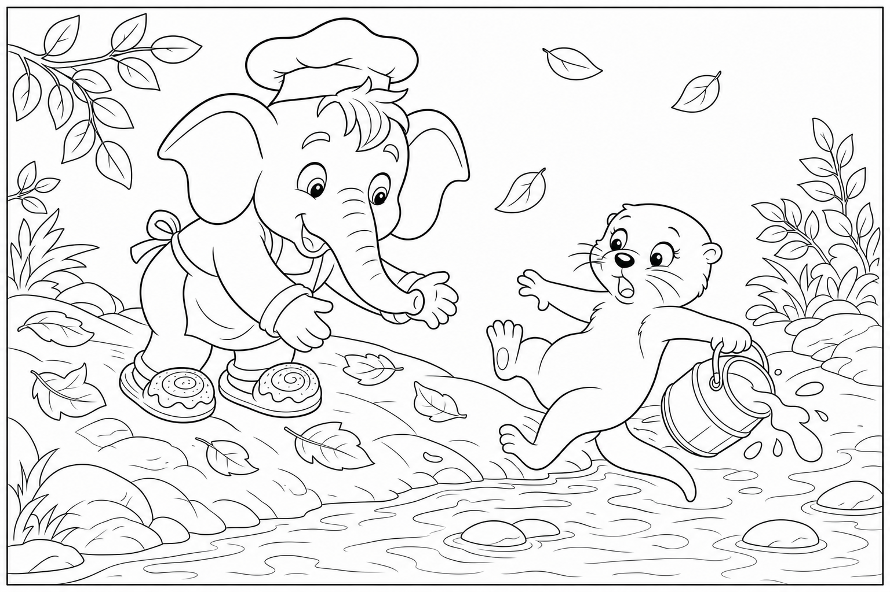

Cerca questa immagine in fondo al libro per colorarla come preferisci. Ricorda: le foglie verdi del platano e la mozzarella bianca lucente.
C'era una volta un Elefante di nome Franco, che gli amici chiamavano ... EleFranco. Di cognome faceva Franchini. Abitava nella sua accogliente casa nel paesino di FrancaVilla, un borgo di pietra chiara costruito a ridosso di un fiume tranquillo, dove i ponti di legno scricchiolavano sotto i passi mattutini, l'aria sapeva di erba tagliata e dalle finestre del caseificio usciva sempre un filo di vapore bianco e dolce.
Era mezzogiorno inoltrato e EleFranco aveva fame di qualcosa di fresco: «Devo andare da Gina al caseificio a prendere una mozzarella morbida per la mia insalata! Se arrivo tardi, chiude il banco del latte.» Aprì il frigorifero: solo lattuga solitaria. «Senza mozzarella, l'insalata è triste.»
Si infilò le sue scarpe giganti impermeabili color verde muschio, prese un cestino di vimini e uscì verso il sentiero del fiume. Ogni passo faceva vibrare le assi del ponticello: THUMP THUMP THUMP A metà strada sentì un piccolo sibilo di frustrazione. Sulla riva c'erano due secchi di latte ancora freddi e, accovacciata su una pietra, Leda la Lontra — lucida, veloce di zampa, ma con gli occhi pieni di paura. «EleFranco!» chiamò.
«Il mio scivolo è diventato un toboga! Stanotte ha piovuto e il muschio è cresciuto come un tappeto scivoloso. Devo portare il latte a Gina prima che si cagli, ma se ci provo finisco nel fiume!» EleFranco guardò lo scivolo di legno che scendeva verso il caseificio.
Poi guardò il cestino vuoto. Poi di nuovo il muschio lucido. «Non ti preoccupare, Leda. Lo rendiamo sicuro.»
Ma mentre cercava le foglie più larghe lungo la riva, la mente cominciò a vagare: quante fette di mozzarella avrebbe messo sull'insalata? Con pomodori o senza? E se Gina avesse anche del basilico profumato? Stava quasi per dimenticare dove fosse quando Leda gridò: «EleFranco, il latte trema nel secchio!»
Allora l'elefante scosse le grandi orecchie e disse ad alta voce la sua parola magica: "FOCUS!"«Piano, Leda. Una foglia alla volta.» Raccoglieva foglie di platano, grandi come parasoli, e le stendeva sullo scivolo per asciugare il muschio. Leda gli passava rametti secchi da infilare tra le fessure.
«Brava idea! Così non scivolano!» incoraggiava. Ma EleFranco, entusiasta, decise che più foglie significava più sicurezza. Ne prese un'intera pila dalla riva e — SWOOSH! — le sparse tutte insieme sul sentiero.
Una valanga verde coprì lo scivolo, il marciapiede e metà della strada verso il caseificio. «Ops,» disse EleFranco, con una foglia enorme appoggiata sulla testa come un cappello da chef. Leda rise, poi si fece seria: «Ora sembri un'insalata ambulante. E il sentiero è ancora più ingombro!»
EleFranco non si arrese. «Le foglie bagnate sono pesanti. Se le calpestiamo con calma, si compattano.» Camminò piano sul tappeto verde, Leda lo imitò con i secchi, e sotto i loro passi le foglie si schiacciarono formando uno strato compatto e antiscivolo.
Dove prima c'era solo muschio pericoloso, ora c'era un ponticello naturale che attraversava il ruscello come un tappeto di foresta. Gina la Casaria uscì dalla porta del caseificio proprio mentre Leda depositava l'ultimo secchio sul banco. «Ma che meraviglia avete costruito!» esclamò, guardando il sentiero rinnovato. «Da anni volevo sistemare quello scivolo!»
Gina prese una mozzarella appena formata, bianca e lucente come una piccola luna, e la pose nel cestino di EleFranco. A Leda regalò un secchio nuovo con il manico arancione. «Per la lontra che non ha mollato il latte.» La missione era compiuta: insalata salvata, sentiero sicuro, amicizia rafforzata.
EleFranco capì allora la morale di quella giornata: Chi rende sicuro il cammino degli altri trova la propria strada. 🛤
EleFranco salutò Leda con un cenno della proboscide e scoppiò nella sua famosa risata: OH... OH... OH...